Ver código
options(
knitr.table.format = "html",
scipen = 999
)options(
knitr.table.format = "html",
scipen = 999
)Cargar paquetes
ipak <- function(pkg){
options(repos = c(CRAN="https://cloud.r-project.org"))
new.pkg <- pkg[!(pkg %in% rownames(installed.packages()))]
if(length(new.pkg)) install.packages(new.pkg, dependencies = TRUE)
invisible(lapply(pkg, function(p)
suppressPackageStartupMessages(library(p, character.only = TRUE))
))
}
packages <- c("tidyverse","kableExtra","psych","readxl")
ipak(packages)[Wickham et al. (2019)](Zhu 2026; Wickham y Bryan 2026; 2026)
El análisis estadístico permite organizar, resumir e interpretar conjuntos de datos para identificar características relevantes de una población o muestra. Una de las herramientas fundamentales para este propósito son las distribuciones de frecuencias, que permiten conocer cómo se distribuyen las observaciones de acuerdo con los valores o categorías de una variable.
Una distribución de frecuencias unidimensional describe el comportamiento de una sola variable estadística. Su representación mediante tablas facilita la comparación de valores, la identificación de patrones y la construcción de gráficos que contribuyen a la interpretación de los datos.
Una distribución de frecuencias es una representación organizada de los datos que indica cuántas observaciones corresponden a cada valor, categoría o intervalo de una variable.
Según la naturaleza de la variable, se distinguen dos formas principales de presentación:
Las principales medidas que conforman una tabla de frecuencias son las siguientes:
Frecuencia absoluta ((f_i)). Indica el número de observaciones que pertenecen a una categoría, valor o clase determinada.
Frecuencia relativa ((h_i)). Representa la proporción de observaciones correspondientes a una categoría respecto al total de datos.
h_i=\frac{f_i}{n}
Frecuencia absoluta acumulada ((F_i)). Corresponde a la suma progresiva de las frecuencias absolutas hasta una categoría o clase determinada. Se utiliza cuando existe un orden significativo en los valores.
F_i=\sum_{j=1}^{i}f_j
Frecuencia relativa acumulada ((H_i)). Representa la suma progresiva de las frecuencias relativas. Expresa la proporción de observaciones acumuladas hasta una categoría o clase determinada.
H_i=\sum_{j=1}^{i}h_j=\frac{F_i}{n}
Porcentaje ((p_i)). Expresa la frecuencia relativa en términos porcentuales.
p_i=h_i\times100
Donde:
La estructura de una tabla de frecuencias depende de la naturaleza de la variable analizada.
Variables cualitativas. Describen atributos o categorías, como el género, el deporte preferido o el nivel educativo. Se emplean frecuencias absolutas, relativas y porcentuales. Las frecuencias acumuladas solo tienen sentido cuando las categorías poseen un orden natural, como sucede con una variable ordinal.
Variables cuantitativas discretas. Representan valores numéricos contables, como el número de hermanos o la cantidad de visitas. Pueden presentarse mediante valores individuales o agruparse cuando existen muchos valores distintos.
Variables cuantitativas continuas. Representan magnitudes que pueden tomar cualquier valor dentro de un intervalo, como la estatura, el peso o el tiempo. Generalmente se organizan en intervalos de clase para facilitar su interpretación.
Cuando una variable cuantitativa presenta numerosos valores diferentes, resulta conveniente agruparlos en intervalos. Para construir esta distribución se consideran los siguientes elementos:
Rango ((R)). Es la diferencia entre el valor máximo y el valor mínimo observado.
R=x_{\max}-x_{\min}
Número de clases ((k)). Corresponde a la cantidad de intervalos en los que se organiza el conjunto de datos. Una aproximación habitual es la regla de Sturges:
k=1+3.322\log_{10}(n)
El resultado se ajusta a un número entero adecuado según las características de los datos.
Amplitud de clase ((A)). Representa el ancho de los intervalos. Si se utiliza una amplitud común, puede estimarse mediante:
A\approx\frac{R}{k}
En la práctica, la amplitud puede redondearse a un valor conveniente, procurando que los intervalos cubran todos los datos y no se superpongan.
Marca de clase ((x_i)). Es el punto medio de cada intervalo y se utiliza como valor representativo de los datos agrupados.
x_i=\frac{L_i+L_s}{2}
Donde (L_i) y (L_s) son, respectivamente, los límites inferior y superior de la clase.
Toda distribución de frecuencias completa debe cumplir las siguientes relaciones:
\sum_{i=1}^{k}f_i=n
\sum_{i=1}^{k}h_i=1
\sum_{i=1}^{k}p_i=100\%
Además, la última frecuencia absoluta acumulada debe ser igual al total de observaciones, mientras que la última frecuencia relativa acumulada debe ser igual a uno, o al 100 % cuando se expresa en porcentajes.
Estas propiedades permiten verificar la consistencia de los cálculos y detectar posibles errores en la construcción de las tablas.
Las distribuciones de frecuencias pueden representarse gráficamente para facilitar el análisis exploratorio de los datos. Entre las representaciones más utilizadas se encuentran:
La elección de la representación depende del tipo de variable y del objetivo del análisis. Una tabla de frecuencias no solo resume los datos, sino que también constituye una base para estudiar su comportamiento, comparar grupos y calcular medidas estadísticas descriptivas.
educacion <- read_excel("C:/Users/crist/OneDrive/Desktop/DISTRIBUCIONES DE FRECUENCIAS/datos/educacion.xlsx")head(educacion)# A tibble: 6 × 10
ID Genero Nivel_Educativo Estrato Cursos Horas Promedio Asistencia
<dbl> <chr> <chr> <chr> <dbl> <dbl> <dbl> <dbl>
1 1 Femenino Universidad Alto 5 26.8 4.37 51.3
2 2 Femenino Universidad Bajo 4 9.05 4.9 51.1
3 3 Femenino Secundaria Medio 8 28.2 1.26 92.4
4 4 Femenino Universidad Bajo 6 17.9 1.96 64.8
5 5 Masculino Universidad Alto 4 15.9 3.6 57.0
6 6 Masculino Primaria Bajo 2 27.6 4.58 76.1
# ℹ 2 more variables: Tecnologia <chr>, Satisfaccion <chr>Número de variables
educacion %>% names %>% length()[1] 10Nombre de las variables
names(educacion) [1] "ID" "Genero" "Nivel_Educativo" "Estrato"
[5] "Cursos" "Horas" "Promedio" "Asistencia"
[9] "Tecnologia" "Satisfaccion" Estructuras de las variables
glimpse(educacion)Rows: 300
Columns: 10
$ ID <dbl> 1, 2, 3, 4, 5, 6, 7, 8, 9, 10, 11, 12, 13, 14, 15, 16,…
$ Genero <chr> "Femenino", "Femenino", "Femenino", "Femenino", "Mascu…
$ Nivel_Educativo <chr> "Universidad", "Universidad", "Secundaria", "Universid…
$ Estrato <chr> "Alto", "Bajo", "Medio", "Bajo", "Alto", "Bajo", "Bajo…
$ Cursos <dbl> 5, 4, 8, 6, 4, 2, 2, 6, 8, 4, 6, 2, 2, 6, 8, 5, 1, 8, …
$ Horas <dbl> 26.82, 9.05, 28.19, 17.86, 15.87, 27.63, 3.31, 14.81, …
$ Promedio <dbl> 4.37, 4.90, 1.26, 1.96, 3.60, 4.58, 1.47, 3.89, 4.65, …
$ Asistencia <dbl> 51.29, 51.06, 92.35, 64.85, 57.01, 76.11, 84.15, 93.22…
$ Tecnologia <chr> "Bajo", "Bajo", "Bajo", "Medio", "Alto", "Medio", "Baj…
$ Satisfaccion <chr> "Muy alta", "Media", "Muy alta", "Muy alta", "Muy baja…Transformar las variables
educacion$Genero <- as.factor(educacion$Genero)
educacion$Nivel_Educativo <- factor(educacion$Nivel_Educativo,
levels = c("Primaria", "Secundaria", "Universidad"), ordered = TRUE)
educacion$Estrato <- factor(educacion$Estrato,
levels = c("Bajo", "Medio", "Alto"), ordered = TRUE)
educacion$Tecnologia <- factor(educacion$Tecnologia,
levels = c("Bajo", "Medio", "Alto"), ordered = TRUE)
educacion$Satisfaccion <- factor(educacion$Satisfaccion,
levels = c("Muy baja", "Baja", "Media", "Alta", "Muy alta"), ordered = TRUE)Nueva estructura de las variables
glimpse(educacion)Rows: 300
Columns: 10
$ ID <dbl> 1, 2, 3, 4, 5, 6, 7, 8, 9, 10, 11, 12, 13, 14, 15, 16,…
$ Genero <fct> Femenino, Femenino, Femenino, Femenino, Masculino, Mas…
$ Nivel_Educativo <ord> Universidad, Universidad, Secundaria, Universidad, Uni…
$ Estrato <ord> Alto, Bajo, Medio, Bajo, Alto, Bajo, Bajo, Medio, Medi…
$ Cursos <dbl> 5, 4, 8, 6, 4, 2, 2, 6, 8, 4, 6, 2, 2, 6, 8, 5, 1, 8, …
$ Horas <dbl> 26.82, 9.05, 28.19, 17.86, 15.87, 27.63, 3.31, 14.81, …
$ Promedio <dbl> 4.37, 4.90, 1.26, 1.96, 3.60, 4.58, 1.47, 3.89, 4.65, …
$ Asistencia <dbl> 51.29, 51.06, 92.35, 64.85, 57.01, 76.11, 84.15, 93.22…
$ Tecnologia <ord> Bajo, Bajo, Bajo, Medio, Alto, Medio, Bajo, Medio, Alt…
$ Satisfaccion <ord> Muy alta, Media, Muy alta, Muy alta, Muy baja, Alta, M…Distribución de frecuencias de diferentes estudiantes de Ibagué según su género (n=300)
# Crear la tabla original
tabla <- tibble(Genero = educacion$Genero) %>%
group_by(Genero) %>%
summarise(fi = n()) %>%
mutate(
hi = round(fi/sum(fi), 4),
Porcentaje = paste0(hi*100, "%"),)
# Convertir las columnas a character para evitar conflictos
tabla <- tabla %>% mutate(
Genero = as.character(Genero))
# Añadir la fila de totales
totales <- tibble(
Genero = "Total",
fi = sum(tabla$fi),
hi = round(sum(tabla$hi), 4),
Porcentaje = paste0(round(sum(tabla$hi) * 100, 2), "%"))
# Combinar la tabla con los totales
tabla_final <- bind_rows(tabla, totales)
# Mostrar la tabla final con kable
tabla_final %>%
knitr::kable(
col.names = c("Genero", "fi", "hi", "Porcentaje"),
align = c("l", "c", "c", "c"))| Genero | fi | hi | Porcentaje |
|---|---|---|---|
| Femenino | 161 | 0.5367 | 53.67% |
| Masculino | 139 | 0.4633 | 46.33% |
| Total | 300 | 1.0000 | 100% |
# Calcular los porcentajes de cada categoría en la variable GENERO
Genero_counts <- educacion %>%
dplyr::count(Genero) %>%
mutate(porcentaje = n / sum(n) * 100)
# Crear el diagrama de barras
ggplot(Genero_counts, aes(x = Genero, y = porcentaje, fill = Genero)) +
geom_bar(stat = "identity") +
labs(title = "Distribución porcentual del genero de los encuestados",
x = "Genero",
y = "Porcentaje") +
theme_minimal() +
theme(legend.position = "none") +
geom_text(aes(label = sprintf("%.1f%%", porcentaje)),
vjust = -0.5,
color = "red",
size = 3.5)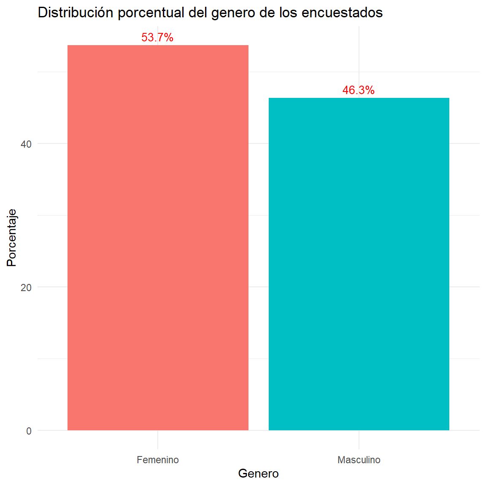
# Calcular los porcentajes de cada categoría en la variable GENERO
Genero_counts <- educacion %>%
dplyr::count(Genero) %>%
mutate(porcentaje = n / sum(n) * 100)
# Crear el diagrama circular
ggplot(Genero_counts, aes(x = "", y = porcentaje, fill = Genero)) +
geom_bar(stat = "identity", width = 1) +
coord_polar("y") +
labs(title = "Distribución porcentual del genero de los encuestados") +
theme_minimal() +
theme(axis.title.x = element_blank(),
axis.title.y = element_blank(),
panel.grid = element_blank(),
axis.text.x = element_blank()) +
geom_text(aes(label = sprintf("%.1f%%", porcentaje)),
position = position_stack(vjust = 0.5),
color = "white",
size = 4)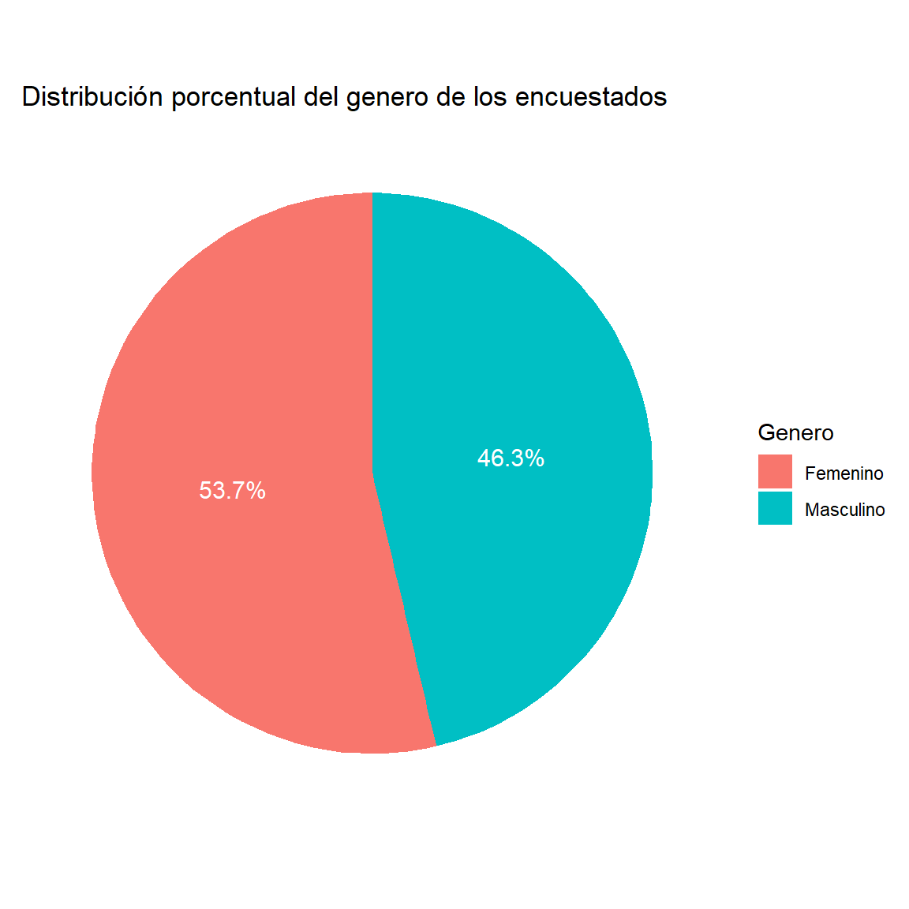
La distribución de frecuencias según el género de los 300 estudiantes evidencia una mayor representación del género femenino, con 161 participantes, equivalentes al 53,67 % de la población estudiada. Por su parte, el género masculino está conformado por 139 estudiantes, que corresponden al 46,33 % del total.
La diferencia entre ambas categorías es de 22 estudiantes, lo que representa una variación de 7,34 puntos porcentuales. Estos resultados muestran una composición relativamente equilibrada en términos de género, aunque con un predominio femenino.
Distribución de frecuencias de diferentes estudiantes de Ibagué según su nivel educativo (n=300)
# Crear la tabla original
tabla <- tibble(Nivel_Educativo = educacion$Nivel_Educativo) %>%
group_by(Nivel_Educativo) %>%
summarise(fi = n()) %>%
mutate(
hi = round(fi/sum(fi), 4),
Porcentaje = paste0(hi*100, "%"),
Fi = cumsum(fi),
Hi = cumsum(hi)
)
# Convertir las columnas Fucion, Fi, y Hi a character para evitar conflictos
tabla <- tabla %>% mutate(
Nivel_Educativo = as.character(Nivel_Educativo),
Fi = as.character(Fi),
Hi = as.character(Hi)
)
# Añadir la fila de totales, dejando Fi y Hi vacíos
totales <- tibble(
Nivel_Educativo = "Total",
fi = sum(tabla$fi),
hi = round(sum(tabla$hi), 4),
Porcentaje = paste0(round(sum(tabla$hi) * 100, 2), "%"),
Fi = "", # Puedes dejar en blanco o usar un valor numérico
Hi = "" # Puedes dejar en blanco o usar un valor numérico
)
# Combinar la tabla con los totales
tabla_final <- bind_rows(tabla, totales)
# Mostrar la tabla final con kable
tabla_final %>%
knitr::kable(
col.names = c("Nivel educativo", "fi", "hi", "Porcentaje", "Fi", "Hi"),
align = c("l", "c", "c", "c", "c", "c")
)| Nivel educativo | fi | hi | Porcentaje | Fi | Hi |
|---|---|---|---|---|---|
| Primaria | 93 | 0.31 | 31% | 93 | 0.31 |
| Secundaria | 105 | 0.35 | 35% | 198 | 0.66 |
| Universidad | 102 | 0.34 | 34% | 300 | 1 |
| Total | 300 | 1.00 | 100% |
# Calcular los porcentajes de cada categoría en la variable Nivel educativo
Nivel_Educativo_counts <- educacion %>%
dplyr::count(Nivel_Educativo) %>%
mutate(porcentaje = n / sum(n) * 100)
# Crear el diagrama de barras
ggplot(Nivel_Educativo_counts, aes(x = Nivel_Educativo, y = porcentaje, fill = Nivel_Educativo)) +
geom_bar(stat = "identity") +
labs(title = "Distribución porcentual del nivel educativo",
x = "Nivel educativo",
y = "Porcentaje") +
theme_minimal() +
theme(legend.position = "none") +
geom_text(aes(label = sprintf("%.1f%%", porcentaje)),
vjust = -0.5,
color = "red",
size = 3.5)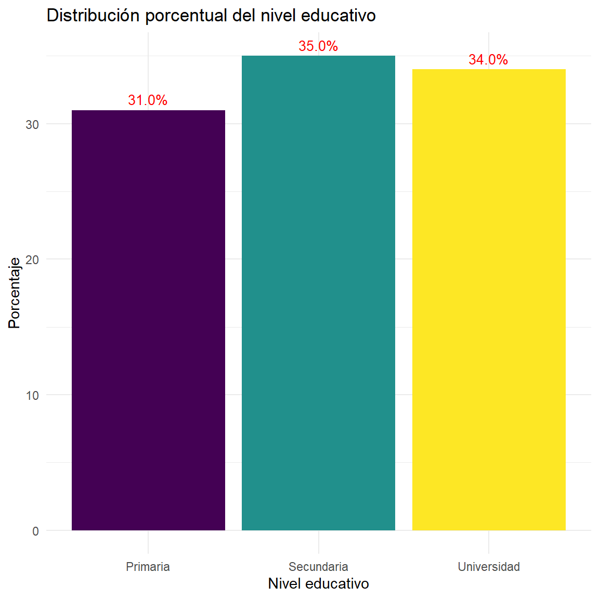
La distribución de frecuencias del nivel educativo de los 300 estudiantes evidencia que la categoría de secundaria presenta la mayor frecuencia absoluta, con 105 estudiantes (35 %), seguida del nivel universitario, con 102 estudiantes (34 %), y primaria, con 93 estudiantes (31 %). En cuanto a la frecuencia relativa, estos valores corresponden a 0,35, 0,34 y 0,31, respectivamente, lo que indica que la distribución porcentual entre los tres niveles es relativamente homogénea.
Respecto a la frecuencia absoluta acumulada, se observa que 93 estudiantes han alcanzado el nivel de primaria o se encuentran en esta categoría; al incorporar la secundaria, el acumulado asciende a 198 estudiantes, y finalmente alcanza los 300 al incluir el nivel universitario. De manera equivalente, la frecuencia relativa acumulada registra valores de 0,31, 0,66 y 1,00, lo que significa que el 31 % de los estudiantes se concentra hasta la categoría de primaria y el 66 % hasta secundaria, mientras que la totalidad de los participantes queda representada al incluir el nivel universitario.
En conjunto, los resultados muestran una distribución relativamente equilibrada entre los niveles educativos considerados, con una ligera predominancia de secundaria.
Distribución de frecuencias de diferentes estudiantes de Ibagué según su estrato (n=300)
# Crear la tabla original
tabla <- tibble(Estrato = educacion$Estrato) %>%
group_by(Estrato) %>%
summarise(fi = n()) %>%
mutate(
hi = round(fi/sum(fi), 4),
Porcentaje = paste0(hi*100, "%"),
Fi = cumsum(fi),
Hi = cumsum(hi)
)
# Convertir las columnas Fucion, Fi, y Hi a character para evitar conflictos
tabla <- tabla %>% mutate(
Estrato = as.character(Estrato),
Fi = as.character(Fi),
Hi = as.character(Hi)
)
# Añadir la fila de totales, dejando Fi y Hi vacíos
totales <- tibble(
Estrato = "Total",
fi = sum(tabla$fi),
hi = round(sum(tabla$hi), 4),
Porcentaje = paste0(round(sum(tabla$hi) * 100, 2), "%"),
Fi = "", # Puedes dejar en blanco o usar un valor numérico
Hi = "" # Puedes dejar en blanco o usar un valor numérico
)
# Combinar la tabla con los totales
tabla_final <- bind_rows(tabla, totales)
# Mostrar la tabla final con kable
tabla_final %>%
knitr::kable(col.names = c("Estrato", "fi", "hi", "Porcentaje", "Fi", "Hi"),
align = c("l", "c", "c", "c", "c", "c"))| Estrato | fi | hi | Porcentaje | Fi | Hi |
|---|---|---|---|---|---|
| Bajo | 97 | 0.3233 | 32.33% | 97 | 0.3233 |
| Medio | 102 | 0.3400 | 34% | 199 | 0.6633 |
| Alto | 101 | 0.3367 | 33.67% | 300 | 1 |
| Total | 300 | 1.0000 | 100% |
# Calcular los porcentajes de cada categoría en la variable Estrato
Estrato_counts <- educacion %>%
dplyr::count(Estrato) %>%
mutate(porcentaje = n / sum(n) * 100)
# Crear el diagrama de barras
ggplot(Estrato_counts, aes(x = Estrato, y = porcentaje, fill = Estrato)) +
geom_bar(stat = "identity") +
labs(title = "Distribución porcentual del estrato",
x = "Estrato",
y = "Porcentaje") +
theme_minimal() +
theme(legend.position = "none") +
geom_text(aes(label = sprintf("%.1f%%", porcentaje)),
vjust = -0.5,
color = "red",
size = 3.5)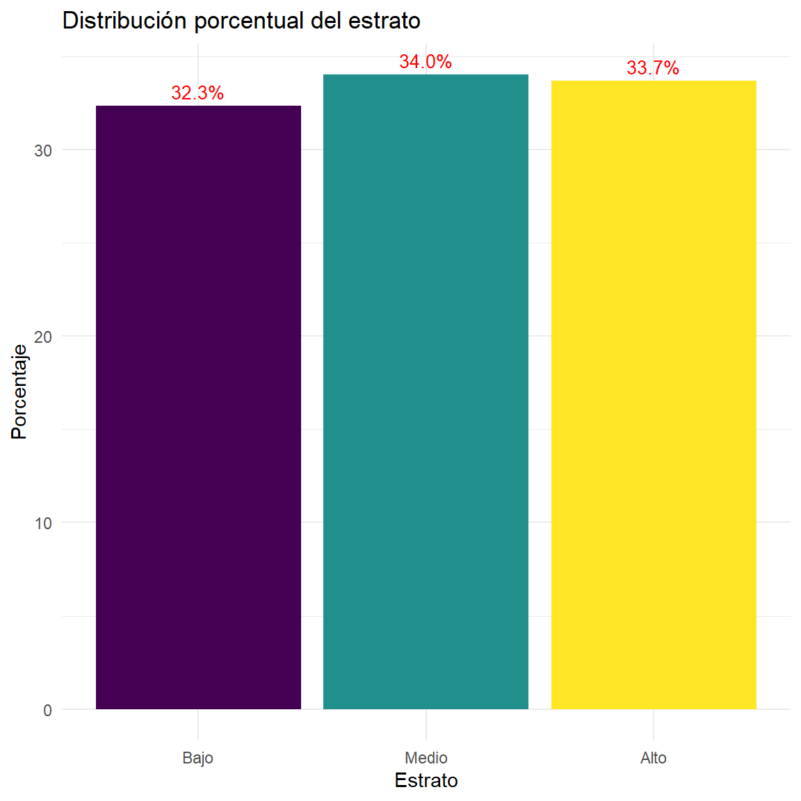
La distribución de frecuencias del estrato socioeconómico de los 300 estudiantes evidencia una composición relativamente homogénea entre las tres categorías. El estrato medio presenta la mayor frecuencia absoluta, con 102 estudiantes, equivalentes a una frecuencia relativa de 0,3400 y un porcentaje del 34 %. Le sigue el estrato alto, con 101 estudiantes (0,3367; 33,67 %), mientras que el estrato bajo registra 97 estudiantes (0,3233; 32,33 %). Estos resultados muestran diferencias poco pronunciadas en la distribución de los participantes entre los estratos considerados.
En relación con la frecuencia absoluta acumulada, se observa que los estratos bajo y medio reúnen conjuntamente 199 estudiantes, mientras que, al incorporar el estrato alto, el acumulado alcanza los 300 participantes. De manera correspondiente, la frecuencia relativa acumulada es de 0,3233 para el estrato bajo, aumenta a 0,6633 al incluir el estrato medio y llega a 1,0000 al considerar la totalidad de las categorías. Estos valores equivalen, respectivamente, al 32,33 %, 66,33 % y 100 % de los estudiantes.
En síntesis, el estrato medio presenta una ligera predominancia dentro de la población estudiada; sin embargo, la distribución porcentual indica que no existe una concentración marcada en una sola categoría.
Distribución de frecuencias de diferentes estudiantes de Ibagué según su Tecnologia (n=300)
# Crear la tabla original
tabla <- tibble(Tecnologia = educacion$Tecnologia) %>%
group_by(Tecnologia) %>%
summarise(fi = n()) %>%
mutate(
hi = round(fi/sum(fi), 4),
Porcentaje = paste0(hi*100, "%"),
Fi = cumsum(fi),
Hi = cumsum(hi)
)
# Convertir las columnas Fucion, Fi, y Hi a character para evitar conflictos
tabla <- tabla %>% mutate(
Tecnologia = as.character(Tecnologia),
Fi = as.character(Fi),
Hi = as.character(Hi)
)
# Añadir la fila de totales, dejando Fi y Hi vacíos
totales <- tibble(
Tecnologia = "Total",
fi = sum(tabla$fi),
hi = round(sum(tabla$hi), 4),
Porcentaje = paste0(round(sum(tabla$hi) * 100, 2), "%"),
Fi = "", # Puedes dejar en blanco o usar un valor numérico
Hi = "" # Puedes dejar en blanco o usar un valor numérico
)
# Combinar la tabla con los totales
tabla_final <- bind_rows(tabla, totales)
# Mostrar la tabla final con kable
tabla_final %>%
knitr::kable(col.names = c("Tecnologia", "fi", "hi", "Porcentaje", "Fi", "Hi"),
align = c("l", "c", "c", "c", "c", "c"))| Tecnologia | fi | hi | Porcentaje | Fi | Hi |
|---|---|---|---|---|---|
| Bajo | 112 | 0.3733 | 37.33% | 112 | 0.3733 |
| Medio | 108 | 0.3600 | 36% | 220 | 0.7333 |
| Alto | 80 | 0.2667 | 26.67% | 300 | 1 |
| Total | 300 | 1.0000 | 100% |
# Calcular los porcentajes de cada categoría en la variable Tecnologia
Tecnologia_counts <- educacion %>%
dplyr::count(Tecnologia) %>%
mutate(porcentaje = n / sum(n) * 100)
# Crear el diagrama de barras
ggplot(Tecnologia_counts, aes(x = Tecnologia, y = porcentaje, fill = Tecnologia)) +
geom_bar(stat = "identity") +
labs(title = "Distribución porcentual de la tecnologia",
x = "Tecnologia",
y = "Porcentaje") +
theme_minimal() +
theme(legend.position = "none") +
geom_text(aes(label = sprintf("%.1f%%", porcentaje)),
vjust = -0.5,
color = "red",
size = 3.5)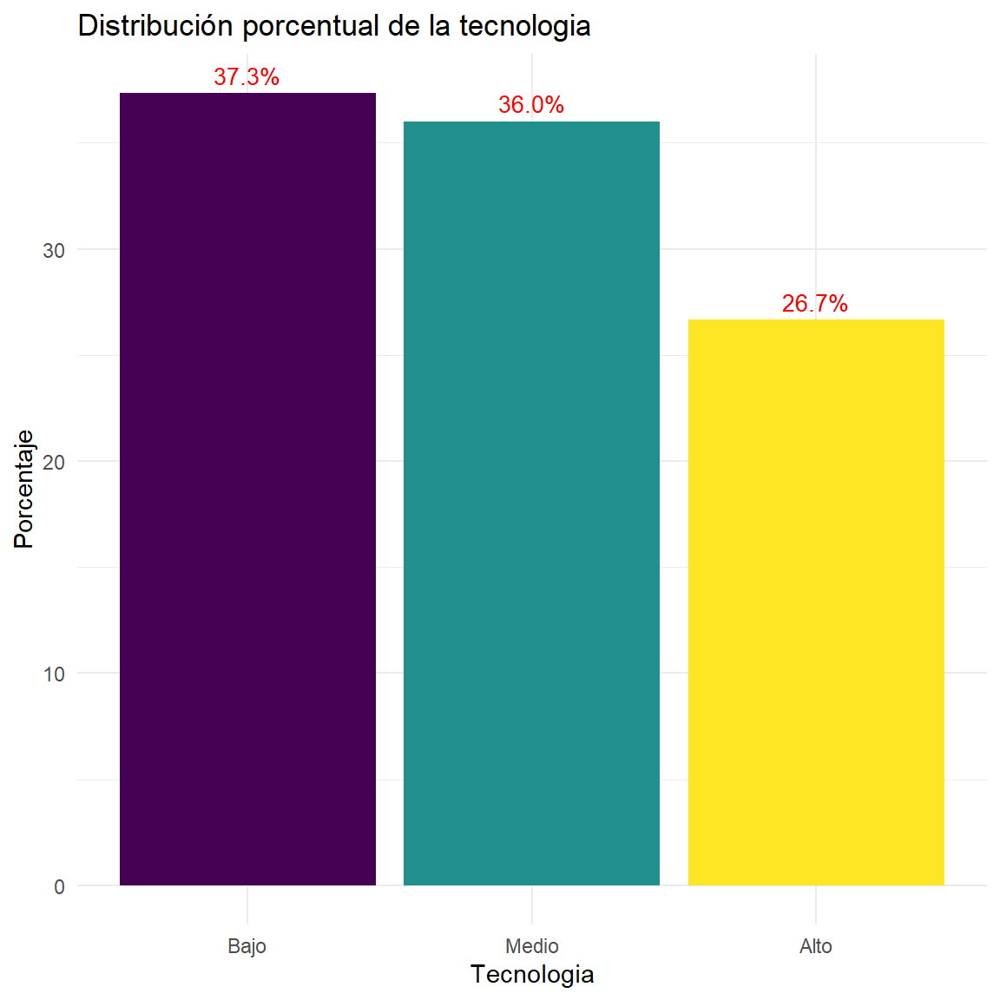
La distribución de frecuencias de la variable tecnología de los 300 estudiantes evidencia una mayor concentración en los niveles bajo y medio. El nivel bajo presenta la mayor frecuencia absoluta, con 112 estudiantes, equivalentes a una frecuencia relativa de 0,3733 y un porcentaje del 37,33 %. Le sigue el nivel medio, con 108 estudiantes (0,3600; 36 %), mientras que el nivel alto registra 80 estudiantes (0,2667; 26,67 %). Estos resultados muestran que el nivel bajo tiene una ligera predominancia sobre el nivel medio, mientras que el nivel alto presenta una menor representación dentro de la población estudiada.
En relación con la frecuencia absoluta acumulada, se observa que los niveles bajo y medio reúnen conjuntamente 220 estudiantes, mientras que, al incorporar el nivel alto, el acumulado alcanza los 300 participantes. De manera correspondiente, la frecuencia relativa acumulada es de 0,3733 para el nivel bajo, aumenta a 0,7333 al incluir el nivel medio y llega a 1,0000 al considerar la totalidad de las categorías. Estos valores equivalen, respectivamente, al 37,33 %, 73,33 % y 100 % de los estudiantes.
En síntesis, la distribución muestra una predominancia de los niveles bajo y medio, que en conjunto representan el 73,33 % de los estudiantes, frente al 26,67 % ubicado en el nivel alto. Esto evidencia una mayor concentración de participantes en las dos primeras categorías
Distribución de frecuencias de diferentes estudiantes de Ibagué según su nivel de satisfacción (n=300)
# Crear la tabla original
tabla <- tibble(Satisfaccion = educacion$Satisfaccion) %>%
group_by(Satisfaccion) %>%
summarise(fi = n()) %>%
mutate(
hi = round(fi/sum(fi), 4),
Porcentaje = paste0(hi*100, "%"),
Fi = cumsum(fi),
Hi = cumsum(hi)
)
# Convertir las columnas Fucion, Fi, y Hi a character para evitar conflictos
tabla <- tabla %>% mutate(
Satisfaccion = as.character(Satisfaccion),
Fi = as.character(Fi),
Hi = as.character(Hi)
)
# Añadir la fila de totales, dejando Fi y Hi vacíos
totales <- tibble(
Satisfaccion = "Total",
fi = sum(tabla$fi),
hi = round(sum(tabla$hi), 4),
Porcentaje = paste0(round(sum(tabla$hi) * 100, 2), "%"),
Fi = "", # Puedes dejar en blanco o usar un valor numérico
Hi = "" # Puedes dejar en blanco o usar un valor numérico
)
# Combinar la tabla con los totales
tabla_final <- bind_rows(tabla, totales)
# Mostrar la tabla final con kable
tabla_final %>%
knitr::kable(col.names = c("Satisfaccion", "fi", "hi", "Porcentaje", "Fi", "Hi"),
align = c("l", "c", "c", "c", "c", "c"))| Satisfaccion | fi | hi | Porcentaje | Fi | Hi |
|---|---|---|---|---|---|
| Muy baja | 48 | 0.1600 | 16% | 48 | 0.16 |
| Baja | 65 | 0.2167 | 21.67% | 113 | 0.3767 |
| Media | 55 | 0.1833 | 18.33% | 168 | 0.56 |
| Alta | 65 | 0.2167 | 21.67% | 233 | 0.7767 |
| Muy alta | 67 | 0.2233 | 22.33% | 300 | 1 |
| Total | 300 | 1.0000 | 100% |
# Calcular los porcentajes de cada categoría en la variable Satisfaccion
Satisfaccion_counts <- educacion %>%
dplyr::count(Satisfaccion) %>%
mutate(porcentaje = n / sum(n) * 100)
# Crear el diagrama de barras
ggplot(Satisfaccion_counts, aes(x = Satisfaccion, y = porcentaje, fill = Satisfaccion)) +
geom_bar(stat = "identity") +
labs(title = "Distribución porcentual del nivel de satisfacción",
x = "Satisfaccion",
y = "Porcentaje") +
theme_minimal() +
theme(legend.position = "none") +
geom_text(aes(label = sprintf("%.1f%%", porcentaje)),
vjust = -0.5,
color = "red",
size = 3.5)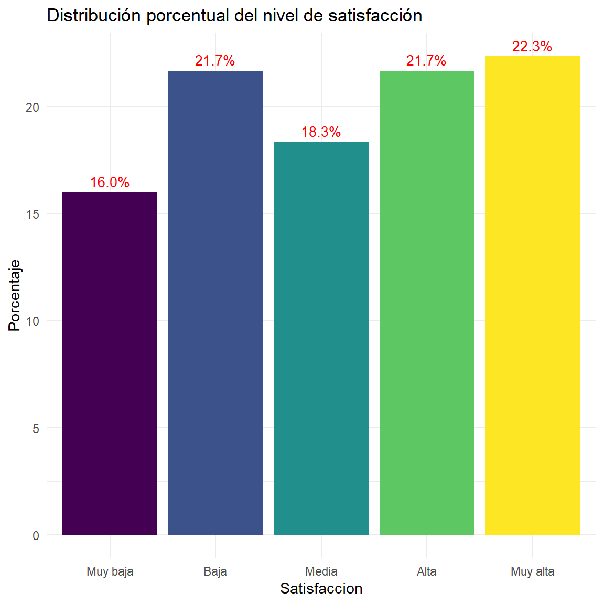
La distribución de frecuencias de la satisfacción de los 300 estudiantes evidencia una distribución relativamente equilibrada entre las cinco categorías, aunque se observa una ligera predominancia de los niveles más altos. La categoría muy alta presenta la mayor frecuencia absoluta, con 67 estudiantes, equivalentes a una frecuencia relativa de 0,2233 y un porcentaje del 22,33 %. Le siguen las categorías baja y alta, con 65 estudiantes cada una (0,2167; 21,67 %), mientras que el nivel medio registra 55 estudiantes (0,1833; 18,33 %) y el nivel muy bajo presenta la menor frecuencia, con 48 estudiantes (0,1600; 16 %). Estos resultados muestran que, aunque existen diferencias entre las categorías, ninguna concentra por sí sola una proporción mayoritaria de los participantes.
En relación con la frecuencia absoluta acumulada, se observa que las categorías muy baja y baja reúnen conjuntamente 113 estudiantes; al incluir la categoría media, el acumulado aumenta a 168 participantes, y al incorporar la categoría alta alcanza los 233 estudiantes, hasta completar los 300 al considerar la categoría muy alta. De manera correspondiente, la frecuencia relativa acumulada es de 0,1600 para la categoría muy baja, aumenta a 0,3767 al incluir la categoría baja, llega a 0,5600 con la categoría media, asciende a 0,7767 al incorporar la categoría alta y alcanza 1,0000 al considerar la totalidad de las categorías. Estos valores equivalen, respectivamente, al 16 %, 37,67 %, 56 %, 77,67 % y 100 % de los estudiantes.
En síntesis, la categoría muy alta presenta una ligera predominancia dentro de la población estudiada, mientras que la categoría muy baja registra la menor representación. Asimismo, las categorías alta y muy alta reúnen conjuntamente a 132 estudiantes, equivalentes al 44 % de la población, lo que indica que una proporción importante de los participantes se ubica en los niveles superiores de satisfacción, aunque la distribución general muestra presencia de estudiantes en todos los niveles considerados.
Distribución de frecuencias de los encuestados según el número de cursos realizados
# Crear la tabla original
tabla <- tibble(Cursos = educacion$Cursos) %>%
group_by(Cursos) %>%
summarise(fi = n()) %>%
mutate(
hi = round(fi/sum(fi), 4),
Porcentaje = paste0(hi*100, "%"),
Fi = cumsum(fi),
Hi = cumsum(hi)
)
# Convertir las columnas Personas, Fi, y Hi a character para evitar conflictos
tabla <- tabla %>% mutate(
Cursos = as.character(Cursos),
Fi = as.character(Fi),
Hi = as.character(Hi)
)
# Añadir la fila de totales, dejando Fi y Hi vacíos
totales <- tibble(
Cursos = "Total",
fi = sum(tabla$fi),
hi = round(sum(tabla$hi), 2),
Porcentaje = paste0(round(sum(tabla$hi) * 100, 2), "%"),
Fi = "", # Puedes dejar en blanco o usar un valor numérico
Hi = "" # Puedes dejar en blanco o usar un valor numérico
)
# Combinar la tabla con los totales
tabla_final <- bind_rows(tabla, totales)
# Mostrar la tabla final con kable
tabla_final %>%
knitr::kable(
col.names = c("# cursos", "fi", "hi", "Porcentaje", "Fi", "Hi"),
align = c("l", "r", "r", "r", "r", "r")
)| # cursos | fi | hi | Porcentaje | Fi | Hi |
|---|---|---|---|---|---|
| 1 | 41 | 0.1367 | 13.67% | 41 | 0.1367 |
| 2 | 40 | 0.1333 | 13.33% | 81 | 0.27 |
| 3 | 25 | 0.0833 | 8.33% | 106 | 0.3533 |
| 4 | 40 | 0.1333 | 13.33% | 146 | 0.4866 |
| 5 | 37 | 0.1233 | 12.33% | 183 | 0.6099 |
| 6 | 41 | 0.1367 | 13.67% | 224 | 0.7466 |
| 7 | 38 | 0.1267 | 12.67% | 262 | 0.8733 |
| 8 | 38 | 0.1267 | 12.67% | 300 | 1 |
| Total | 300 | 1.0000 | 100% |
# valores de la variable
x <- c(1, 2, 3, 4, 5, 6, 7, 8)
# f.m.p.
fx <- c(0.1367, 0.1333, 0.0833, 0.1333, 0.1233, 0.1367, 0.1267, 0.1267)
# Crear un dataframe con los datos
df <- data.frame(x = x, fx = fx)
# Gráfico con ggplot2
ggplot(df, aes(x = x, y = fx)) +
geom_point(shape = 18, color = "black") +
geom_segment(aes(xend = x, yend = 0), size = 1, color = "blue") +
labs(x = "# cursos", y = "Porcentaje", title = "Diagrama de bastones") +
theme_minimal() +
geom_text(aes(label = fx), vjust = -0.5)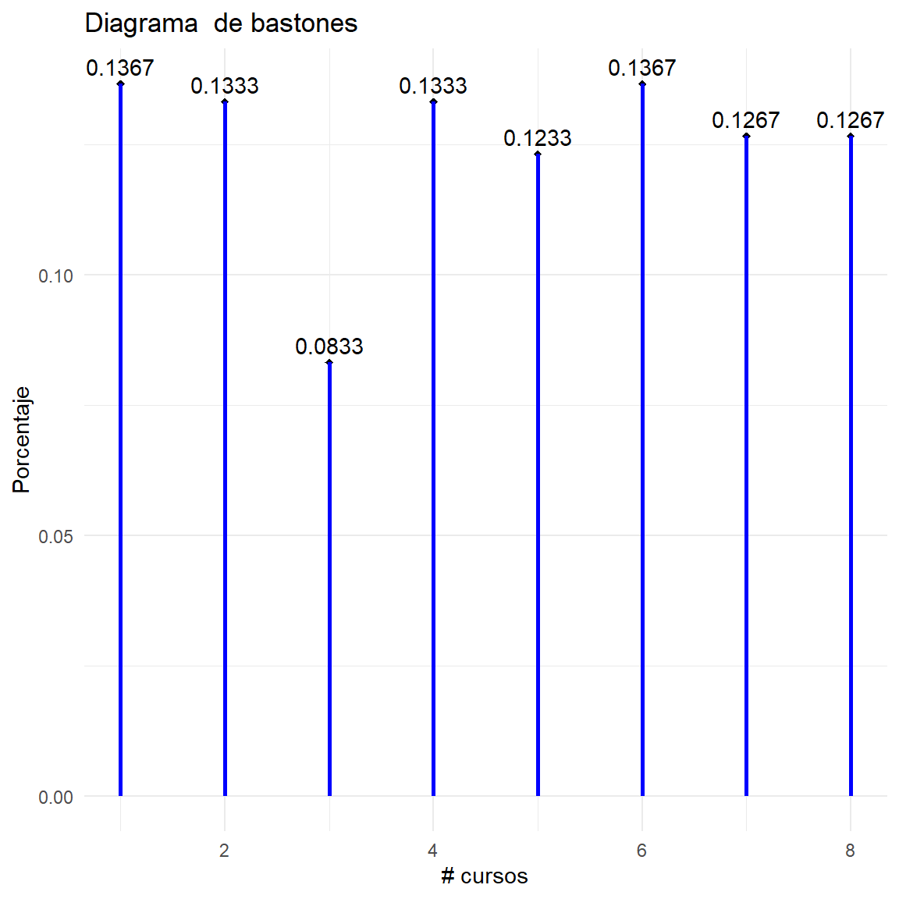
# Crear datos
df <- tibble(
x = c(1, 2, 3, 4, 5, 6, 7, 8),
Hi = c(0.1367, 0.27, 0.3533, 0.4866, 0.6099, 0.7466, 0.8733, 1)
)
# Gráfica de función de distribución acumulada
ggplot(df, aes(x = x, y = Hi)) +
geom_step(color = "#ffB300", size = 1.2) + # línea escalonada (CDF)
geom_point(color = "#000000", size = 3) + # puntos
scale_x_continuous(breaks = df$x) +
scale_y_continuous(limits = c(0, 1)) +
labs(
title = "Función de Distribución Acumulada (FDA)",
x = "# cursos",
y = "Frecuencia relativa acumulada (Hi)"
) +
theme_minimal(base_size = 14) +
theme(
plot.title = element_text(face = "bold", hjust = 0.5),
panel.grid.minor = element_blank()
)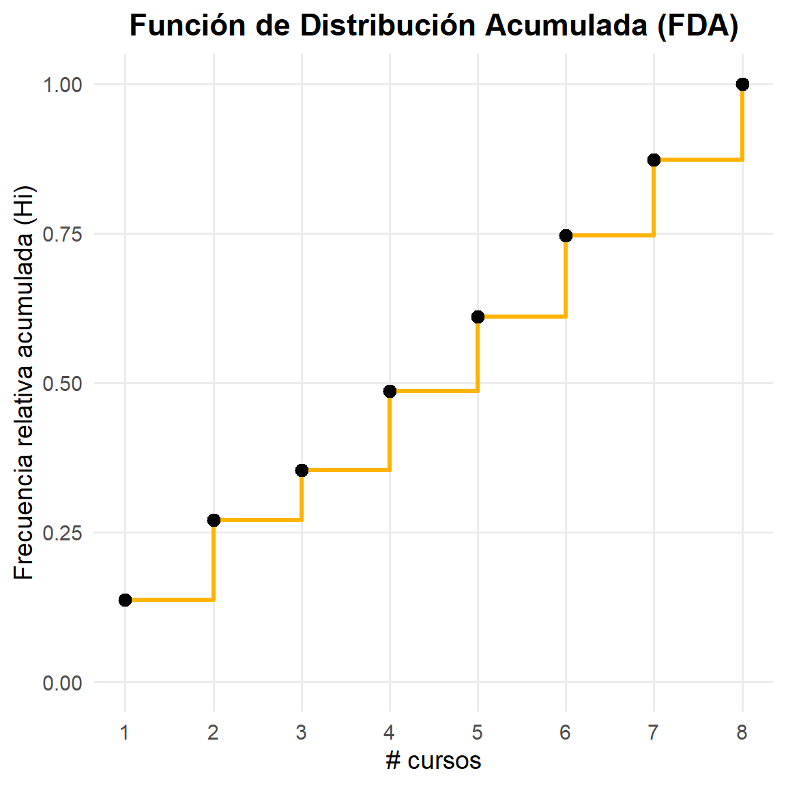
La distribución de frecuencias del número de cursos realizados por los 300 estudiantes evidencia una distribución relativamente equilibrada entre las ocho categorías. Los valores de 1 y 6 cursos presentan las mayores frecuencias absolutas, con 41 estudiantes cada uno, equivalentes a una frecuencia relativa de 0,1367 y un porcentaje del 13,67 %. Les siguen las categorías de 2 y 4 cursos, con 40 estudiantes cada una (0,1333; 13,33 %), mientras que las categorías de 7 y 8 cursos registran 38 estudiantes cada una (0,1267; 12,67 %), y la categoría de 5 cursos presenta 37 estudiantes (0,1233; 12,33 %). Finalmente, la categoría de 3 cursos registra la menor frecuencia, con 25 estudiantes, correspondientes a una frecuencia relativa de 0,0833 y un porcentaje del 8,33 %. Estos resultados muestran que no existe una diferencia pronunciada entre la mayoría de las categorías, aunque la realización de 3 cursos presenta una menor representación dentro de la población estudiada.
En relación con la frecuencia absoluta acumulada, se observa que 81 estudiantes han realizado hasta 2 cursos; al incluir la categoría de 3 cursos, el acumulado aumenta a 106 participantes, y al incorporar las categorías sucesivas alcanza 183 estudiantes hasta los 5 cursos, 224 hasta los 6 cursos y 262 hasta los 7 cursos, hasta completar los 300 participantes en la categoría de 8 cursos. De manera correspondiente, la frecuencia relativa acumulada es de 0,1367 para 1 curso, aumenta a 0,2700 al incluir 2 cursos, llega a 0,3533 con 3 cursos, alcanza 0,4866 con 4 cursos, asciende a 0,6099 con 5 cursos, llega a 0,7466 con 6 cursos y aumenta a 0,8733 con 7 cursos, hasta alcanzar 1,0000 al considerar las ocho categorías. Estos valores indican que el 35,33 % de los estudiantes ha realizado hasta 3 cursos, el 60,99 % hasta 5 cursos y el 87,33 % hasta 7 cursos.
En síntesis, el número de cursos realizados presenta una distribución relativamente uniforme, con una ligera predominancia de las categorías de 1 y 6 cursos, mientras que la categoría de 3 cursos registra la menor participación. Asimismo, la frecuencia acumulada permite observar que la mayoría de los estudiantes, equivalente al 60,99 %, ha realizado entre 1 y 5 cursos, lo que evidencia una concentración de participantes en las primeras cinco categorías de la distribución.
Generación de intervalos variable Horas
Min <- min(educacion$Horas)
Min[1] 1.23Max <- max(educacion$Horas)
Max[1] 29.98R <- Max-Min
R[1] 28.75m <- ceiling(1 + 3.322*log10(nrow(educacion)))
m[1] 10A <- ceiling((R/m) * 100) / 100
A[1] 2.88RC <- A*m
RC[1] 28.8D <- RC-R
D[1] 0.05Xmin <- Min - 0.02
Xmin[1] 1.21Xmax <- Max + 0.03
Xmax[1] 30.01Distribución de frecuencias de los encuestados según el número de horas dedicadas con (n=300)
m1 <- (Xmin+(Xmin+A))/2
interv = cut(x = educacion$Horas, breaks = seq(Xmin, Xmax, by = A), include.lowest = TRUE)
tabla <- tibble(Horas = interv) %>%
group_by(Horas) %>%
summarise(fi = n()) %>%
mutate(hi = round(fi / sum(fi),4)) %>%
mutate(
mi = seq(m1, by = A, length.out = n()) %>% as.character(),
Fi = cumsum(fi) %>% as.character(),
Hi = round(cumsum(fi / sum(fi)),4) %>% as.character()
) %>%
relocate(Horas, mi, fi)
# Agregar la fila total con casillas en blanco
tabla <- tabla %>%
add_row(Horas = "Total", mi = "", fi = sum(tabla$fi), hi = sum(tabla$hi), Fi = "", Hi = "")
# Generar la tabla con knitr::kable y agregar título
tabla %>%
knitr::kable(
col.names = c("Horas", "mi", "fi", "hi", "Fi", "Hi"),
align = c("l", "r", "r", "r", "r", "r")
) %>%
kableExtra::kable_styling(full_width = FALSE) %>%
kableExtra::add_header_above(c("Distribuciones de frecuencias para la variable Horas" = 6))| Horas | mi | fi | hi | Fi | Hi |
|---|---|---|---|---|---|
| [1.21,4.09] | 2.65 | 23 | 0.0767 | 23 | 0.0767 |
| (4.09,6.97] | 5.53 | 27 | 0.0900 | 50 | 0.1667 |
| (6.97,9.85] | 8.41 | 29 | 0.0967 | 79 | 0.2633 |
| (9.85,12.7] | 11.29 | 22 | 0.0733 | 101 | 0.3367 |
| (12.7,15.6] | 14.17 | 29 | 0.0967 | 130 | 0.4333 |
| (15.6,18.5] | 17.05 | 29 | 0.0967 | 159 | 0.53 |
| (18.5,21.4] | 19.93 | 40 | 0.1333 | 199 | 0.6633 |
| (21.4,24.2] | 22.81 | 34 | 0.1133 | 233 | 0.7767 |
| (24.2,27.1] | 25.69 | 34 | 0.1133 | 267 | 0.89 |
| (27.1,30] | 28.57 | 33 | 0.1100 | 300 | 1 |
| Total | 300 | 1.0000 |
# Dataframe (tus datos)
Horas <- data.frame(
li = c(1.21, 4.09, 6.97, 9.85, 12.7, 15.6, 18.5, 21.4, 24.7, 27.1),
ls = c(4.09, 6.97, 9.85, 12.7, 15.6, 18.5, 21.4, 24.7,27.11, 30),
fi = c(23, 27, 29, 22, 29, 29, 40, 34, 34, 33)
)
# Histograma real con intervalos
ggplot(Horas) +
geom_rect(aes(
xmin = li,
xmax = ls,
ymin = 0,
ymax = fi
),
fill = "gold",
color = "black"
) +
scale_x_continuous(breaks = seq(0, 30, by = 5)) +
labs(
title = "Histograma de las horas dedicadas",
x = "Horas",
y = "Frecuencia"
) +
theme_minimal(base_size = 14) +
theme(
plot.title = element_text(hjust = 0.5, face = "bold")
)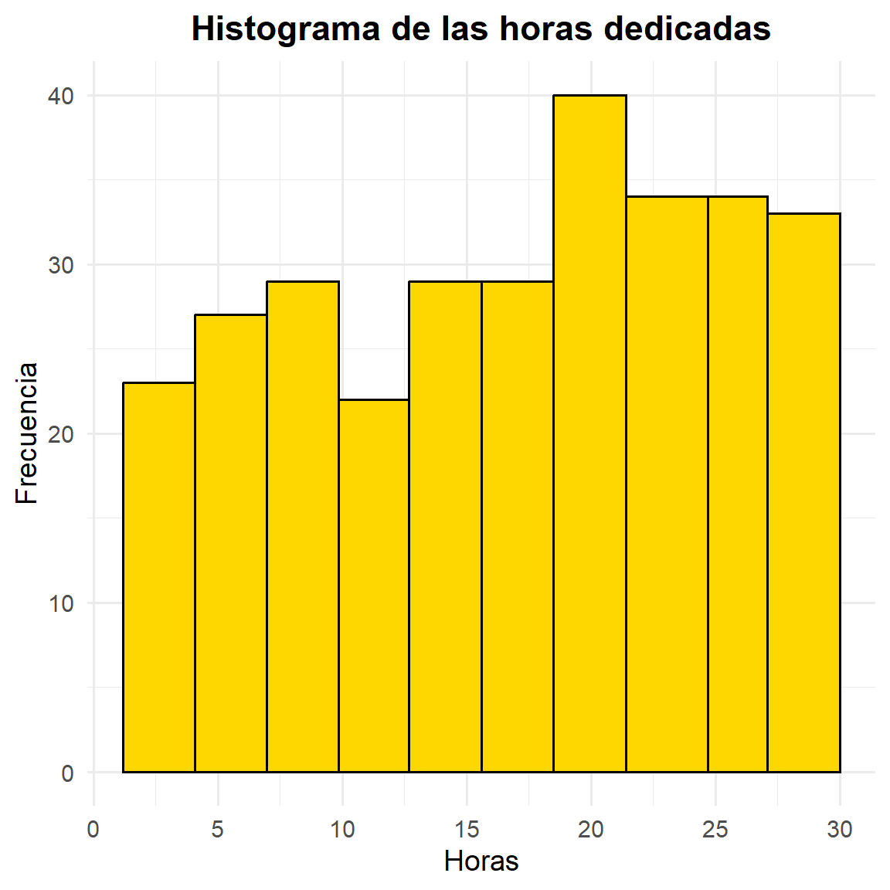
edad <- tibble(
li = c(1.21, 4.09, 6.97, 9.85, 12.7, 15.6, 18.5, 21.4, 24.7, 27.1),
ls = c(4.09, 6.97, 9.85, 12.7, 15.6, 18.5, 21.4, 24.7,27.11, 30),
fi = c(23, 27, 29, 22, 29, 29, 40, 34, 34, 33)
)
# Calcular acumuladas
Horas <- Horas %>%
mutate(
Fi = cumsum(fi),
Hi = Fi / sum(fi)
)
# Graficar ojiva
ggplot(Horas, aes(x = ls, y = Hi)) +
geom_line(color = "gold", linewidth = 1) +
geom_point(color = "black", size = 2) +
labs(
title = "Ojiva de las horas dedicadas",
x = "Horas (límite superior del intervalo)",
y = "Frecuencia acumulada relativa"
) +
scale_y_continuous(labels = scales::percent) +
theme_minimal()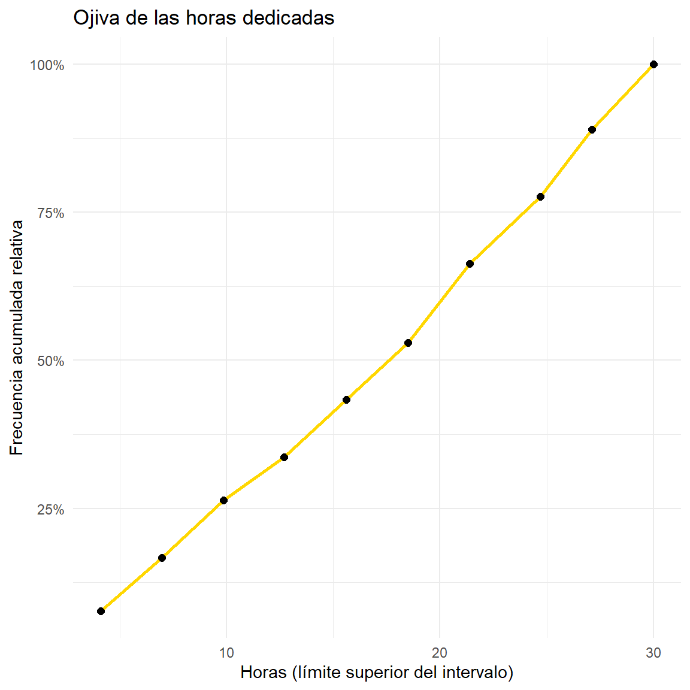
Horas <- data.frame(
mi = c(2.65, 5.53, 8.41, 11.29, 14.17, 17.05, 19.93, 22.81, 25.69, 28.57),
fi = c(23, 27, 29, 22, 29, 29, 40, 34, 34, 33)
)
Horas_expandida <- Horas %>%
slice(rep(1:n(), fi))
dens <- density(Horas_expandida$mi)
plot(dens,
main = "Densidad",
xlab = "Horas",
ylab = "Densidad",
col = "black",
lwd = 2)
polygon(dens, col = "gold", border = "black")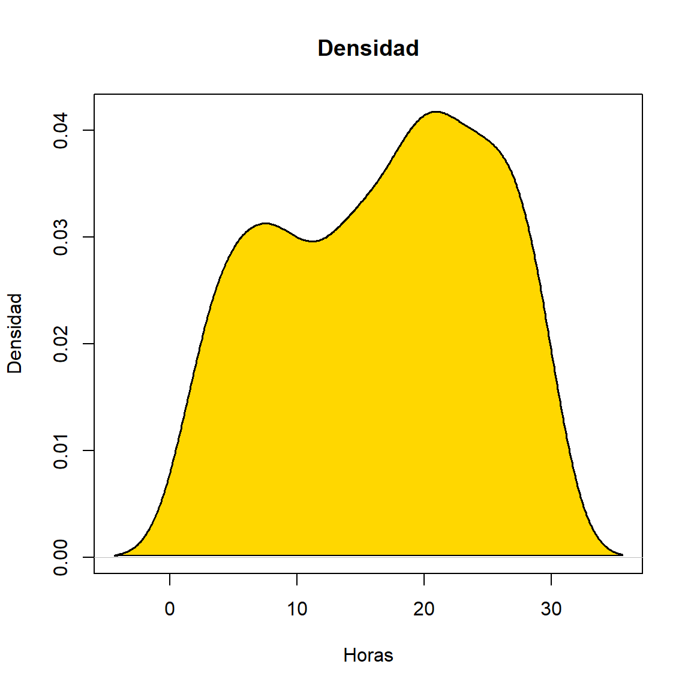
La distribución de frecuencias de la variable horas, correspondiente a los 300 estudiantes, evidencia una distribución heterogénea entre los diez intervalos considerados. El intervalo (18.5,21.4] presenta la mayor frecuencia absoluta, con 40 estudiantes, equivalentes a una frecuencia relativa de 0,1333 y un porcentaje del 13,33 %. Le siguen los intervalos (21.4,24.2] y (24.2,27.1], con 34 estudiantes cada uno (0,1133; 11,33 %), y el intervalo (27.1,30], con 33 estudiantes (0,1100; 11 %). Por su parte, los intervalos (6.97,9.85], (12.7,15.6] y (15.6,18.5] registran 29 estudiantes cada uno (0,0967; 9,67 %), mientras que los intervalos (4.09,6.97], [1.21,4.09] y (9.85,12.7] presentan 27, 23 y 22 estudiantes, respectivamente. Este último intervalo registra la menor frecuencia absoluta, con una frecuencia relativa de 0,0733 y una representación del 7,33 %. En general, se observa una mayor concentración de estudiantes en los intervalos comprendidos entre 18,5 y 30 horas, aunque las diferencias entre las frecuencias de los distintos intervalos no son extremadamente pronunciadas.
En relación con la frecuencia absoluta acumulada, se observa que 79 estudiantes se encuentran en los tres primeros intervalos, es decir, hasta 9,85 horas; al incluir el intervalo hasta 12,7 horas, el acumulado asciende a 101 participantes. Posteriormente, la frecuencia acumulada aumenta a 159 estudiantes hasta 18,5 horas, a 199 hasta 21,4 horas, a 233 hasta 24,2 horas y a 267 hasta 27,1 horas, hasta alcanzar los 300 participantes en el último intervalo. De manera correspondiente, la frecuencia relativa acumulada pasa de 0,0767 en el primer intervalo a 0,2633 hasta 9,85 horas, alcanza 0,4333 hasta 15,6 horas, aumenta a 0,6633 hasta 21,4 horas y llega a 0,8900 hasta 27,1 horas, hasta completar 1,0000 al considerar la totalidad de los intervalos. Estos valores indican que el 43,33 % de los estudiantes registra hasta 15,6 horas, mientras que el 66,33 % acumula hasta 21,4 horas y el 89 % hasta 27,1 horas.
En síntesis, la distribución muestra una mayor concentración de estudiantes en los intervalos superiores, particularmente entre 18,5 y 30 horas, que reúnen conjuntamente a 141 estudiantes, equivalentes al 47 % de la población. Por el contrario, los intervalos inferiores presentan frecuencias relativamente menores. La frecuencia acumulada permite observar cómo se distribuyen progresivamente los 300 estudiantes a lo largo de los intervalos establecidos.
Generación de intervalos variable promedio
Min <- min(educacion$Promedio)
Min[1] 1.03Max <- max(educacion$Promedio)
Max[1] 4.99R <- Max-Min
R[1] 3.96m <- ceiling(1 + 3.322*log10(nrow(educacion)))
m[1] 10A <- ceiling((R/m) * 100) / 100
A[1] 0.4RC <- A*m
RC[1] 4D <- RC-R
D[1] 0.04Xmin <- Min - 0.02
Xmin[1] 1.01Xmax <- Max + 0.02
Xmax[1] 5.01Distribución de frecuencias de los encuestados según su promedio con(n=300)
m1 <- (Xmin+(Xmin+A))/2
interv = cut(x = educacion$Promedio, breaks = seq(Xmin, Xmax, by = A), include.lowest = TRUE)
tabla <- tibble(Promedio = interv) %>%
group_by(Promedio) %>%
summarise(fi = n()) %>%
mutate(hi = round(fi / sum(fi),4)) %>%
mutate(
mi = seq(m1, by = A, length.out = n()) %>% as.character(),
Fi = cumsum(fi) %>% as.character(),
Hi = round(cumsum(fi / sum(fi)),4) %>% as.character()
) %>%
relocate(Promedio, mi, fi)
# Agregar la fila total con casillas en blanco
tabla <- tabla %>%
add_row(Promedio = "Total", mi = "", fi = sum(tabla$fi), hi = sum(tabla$hi), Fi = "", Hi = "")
# Generar la tabla con knitr::kable y agregar título
tabla %>%
knitr::kable(
col.names = c("Promedio", "mi", "fi", "hi", "Fi", "Hi"),
align = c("l", "r", "r", "r", "r", "r")
) %>%
kableExtra::kable_styling(full_width = FALSE) %>%
kableExtra::add_header_above(c("Distribuciones de frecuencias para la variable Promedio" = 6))| Promedio | mi | fi | hi | Fi | Hi |
|---|---|---|---|---|---|
| [1.01,1.41] | 1.21 | 28 | 0.0933 | 28 | 0.0933 |
| (1.41,1.81] | 1.61 | 30 | 0.1000 | 58 | 0.1933 |
| (1.81,2.21] | 2.01 | 32 | 0.1067 | 90 | 0.3 |
| (2.21,2.61] | 2.41 | 17 | 0.0567 | 107 | 0.3567 |
| (2.61,3.01] | 2.81 | 35 | 0.1167 | 142 | 0.4733 |
| (3.01,3.41] | 3.21 | 37 | 0.1233 | 179 | 0.5967 |
| (3.41,3.81] | 3.61 | 29 | 0.0967 | 208 | 0.6933 |
| (3.81,4.21] | 4.01 | 35 | 0.1167 | 243 | 0.81 |
| (4.21,4.61] | 4.41 | 25 | 0.0833 | 268 | 0.8933 |
| (4.61,5.01] | 4.81 | 32 | 0.1067 | 300 | 1 |
| Total | 300 | 1.0001 |
# Dataframe (tus datos)
Promedio <- data.frame(
li = c(1.01, 1.41, 1.81, 2.21, 2.61, 3.01, 3.41, 3.81, 4.21, 4.61),
ls = c(1.41, 1.81, 2.21, 2.61, 3.01, 3.41, 3.81, 4.21, 4.61, 5.01),
fi = c(28, 30, 32, 17, 35, 37, 29, 35, 25, 32)
)
# Histograma real con intervalos
ggplot(Promedio) +
geom_rect(aes(
xmin = li,
xmax = ls,
ymin = 0,
ymax = fi
),
fill = "gold",
color = "black"
) +
scale_x_continuous(breaks = seq(0, 30, by = 5)) +
labs(
title = "Histograma del promedio obtenido",
x = "Promedio",
y = "Frecuencia"
) +
theme_minimal(base_size = 14) +
theme(
plot.title = element_text(hjust = 0.5, face = "bold")
)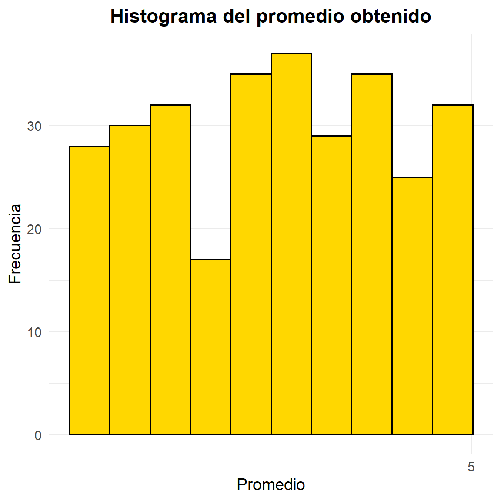
Promedio <- tibble(
li = c(1.01, 1.41, 1.81, 2.21, 2.61, 3.01, 3.41, 3.81, 4.21, 4.61),
ls = c(1.41, 1.81, 2.21, 2.61, 3.01, 3.41, 3.81, 4.21, 4.61, 5.01),
fi = c(28, 30, 32, 17, 35, 37, 29, 35, 25, 32)
)
# Calcular acumuladas
Promedio <- Promedio %>%
mutate(
Fi = cumsum(fi),
Hi = Fi / sum(fi)
)
# Graficar ojiva
ggplot(Promedio, aes(x = ls, y = Hi)) +
geom_line(color = "gold", linewidth = 1) +
geom_point(color = "black", size = 2) +
labs(
title = "Ojiva del promedio obtenido",
x = "Horas (límite superior del intervalo)",
y = "Frecuencia acumulada relativa"
) +
scale_y_continuous(labels = scales::percent) +
theme_minimal()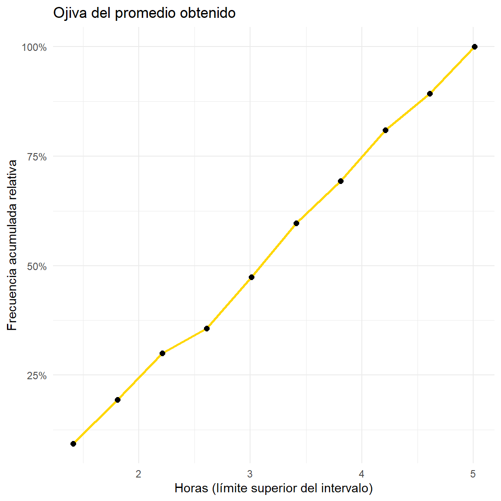
Promedio <- data.frame(
mi = c(1.21, 1.61, 2.01, 2.41, 2.81, 3.21, 3.61, 4.01, 4.41, 4.81),
fi = c(28, 30, 32, 17, 35, 37, 29, 35, 25, 32)
)
Promedio_expandida <- Promedio %>%
slice(rep(1:n(), fi))
dens <- density(Promedio_expandida$mi)
plot(dens,
main = "Densidad",
xlab = "Promedio",
ylab = "Densidad",
col = "black",
lwd = 2)
polygon(dens, col = "gold", border = "black")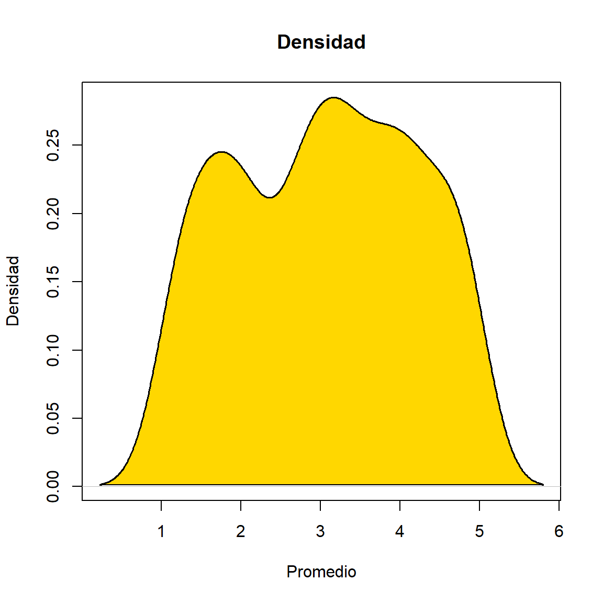
La distribución de frecuencias de la variable promedio de los 300 estudiantes evidencia una distribución relativamente equilibrada entre los diez intervalos considerados, aunque se observa una ligera concentración en los valores intermedios. El intervalo (3.01,3.41] presenta la mayor frecuencia absoluta, con 37 estudiantes, equivalentes a una frecuencia relativa de 0,1233 y un porcentaje del 12,33 %. Le siguen los intervalos (2.61,3.01] y (3.81,4.21], con 35 estudiantes cada uno (0,1167; 11,67 %), mientras que el intervalo (1.01,1.41] registra 28 estudiantes (0,0933; 9,33 %). Por su parte, el intervalo (2.21,2.61] presenta la menor frecuencia absoluta, con 17 estudiantes, correspondientes a una frecuencia relativa de 0,0567 y un porcentaje del 5,67 %. Estos resultados muestran que los promedios se distribuyen entre los distintos intervalos, con una mayor representación en el rango comprendido entre 2,61 y 4,21.
En relación con la frecuencia absoluta acumulada, se observa que 90 estudiantes registran promedios de hasta 2,21; al incluir el intervalo hasta 2,61, el acumulado asciende a 107 participantes. Posteriormente, la frecuencia acumulada aumenta a 179 estudiantes hasta 3,41, a 208 hasta 3,81, a 243 hasta 4,21 y a 268 hasta 4,61, hasta alcanzar los 300 participantes en el último intervalo. De manera correspondiente, la frecuencia relativa acumulada pasa de 0,0933 en el primer intervalo a 0,3000 hasta 2,21, alcanza 0,5967 hasta 3,41, aumenta a 0,8100 hasta 4,21 y llega a 0,8933 hasta 4,61, hasta completar 1,0000 al considerar la totalidad de los intervalos. Estos valores indican que el 59,67 % de los estudiantes presenta promedios de hasta 3,41, mientras que el 81 % registra promedios de hasta 4,21.
En síntesis, la distribución muestra una mayor concentración de estudiantes en los intervalos intermedios, especialmente entre 2,61 y 4,21, que reúnen conjuntamente a 136 estudiantes, equivalentes al 45,33 % de la población. Asimismo, el 40,33 % de los participantes presenta promedios superiores a 3,41, mientras que el 30 % registra valores de hasta 2,21. Estos resultados permiten identificar la distribución de los promedios académicos dentro de la población estudiada,
Generación de intervalos variable Asistencia (%)
Min <- min(educacion$Asistencia)
Min[1] 50.17Max <- max(educacion$Asistencia)
Max[1] 99.74R <- Max-Min
R[1] 49.57m <- ceiling(1 + 3.322*log10(nrow(educacion)))
m[1] 10A <- ceiling((R/m) * 100) / 100
A[1] 4.96RC <- A*m
RC[1] 49.6D <- RC-R
D[1] 0.03Xmin <- Min - 0.01
Xmin[1] 50.16Xmax <- Max + 0.02
Xmax[1] 99.76Distribución de frecuencias de los encuestados según su porcentaje de asistencia con (n=300)
m1 <- (Xmin+(Xmin+A))/2
interv = cut(x = educacion$Asistencia, breaks = seq(Xmin, Xmax, by = A), include.lowest = TRUE)
tabla <- tibble(Asistencia = interv) %>%
group_by(Asistencia) %>%
summarise(fi = n()) %>%
mutate(hi = round(fi / sum(fi),4)) %>%
mutate(
mi = seq(m1, by = A, length.out = n()) %>% as.character(),
Fi = cumsum(fi) %>% as.character(),
Hi = round(cumsum(fi / sum(fi)),4) %>% as.character()
) %>%
relocate(Asistencia, mi, fi)
# Agregar la fila total con casillas en blanco
tabla <- tabla %>%
add_row(Asistencia = "Total", mi = "", fi = sum(tabla$fi), hi = sum(tabla$hi), Fi = "", Hi = "")
# Generar la tabla con knitr::kable y agregar título
tabla %>%
knitr::kable(
col.names = c("Asistencia (%)", "mi", "fi", "hi", "Fi", "Hi"),
align = c("l", "r", "r", "r", "r", "r")
) %>%
kableExtra::kable_styling(full_width = FALSE) %>%
kableExtra::add_header_above(c("Distribuciones de frecuencias para la variable Asistencia (%)" = 6))| Asistencia (%) | mi | fi | hi | Fi | Hi |
|---|---|---|---|---|---|
| [50.2,55.1] | 52.64 | 38 | 0.1267 | 38 | 0.1267 |
| (55.1,60.1] | 57.6 | 33 | 0.1100 | 71 | 0.2367 |
| (60.1,65] | 62.56 | 30 | 0.1000 | 101 | 0.3367 |
| (65,70] | 67.52 | 24 | 0.0800 | 125 | 0.4167 |
| (70,75] | 72.48 | 22 | 0.0733 | 147 | 0.49 |
| (75,79.9] | 77.44 | 14 | 0.0467 | 161 | 0.5367 |
| (79.9,84.9] | 82.4 | 38 | 0.1267 | 199 | 0.6633 |
| (84.9,89.8] | 87.36 | 28 | 0.0933 | 227 | 0.7567 |
| (89.8,94.8] | 92.32 | 38 | 0.1267 | 265 | 0.8833 |
| (94.8,99.8] | 97.28 | 35 | 0.1167 | 300 | 1 |
| Total | 300 | 1.0001 |
# Dataframe (tus datos)
Asistencia <- data.frame(
li = c(50.2, 55.1, 60.1, 65, 70, 75, 79.9, 84.9, 89.8, 94.8),
ls = c(55.1, 60.1, 65, 70, 75, 79.9, 84.9, 89.8, 94.8, 99.8),
fi = c(38, 33, 30, 24, 22, 14, 38, 28, 38, 35)
)
# Histograma real con intervalos
ggplot(Asistencia) +
geom_rect(aes(
xmin = li,
xmax = ls,
ymin = 0,
ymax = fi
),
fill = "gold",
color = "black"
) +
scale_x_continuous(breaks = seq(0, 30, by = 5)) +
labs(
title = "Histograma del porcentaje de asistencia",
x = "Asistencia (%)",
y = "Frecuencia"
) +
theme_minimal(base_size = 14) +
theme(
plot.title = element_text(hjust = 0.5, face = "bold")
)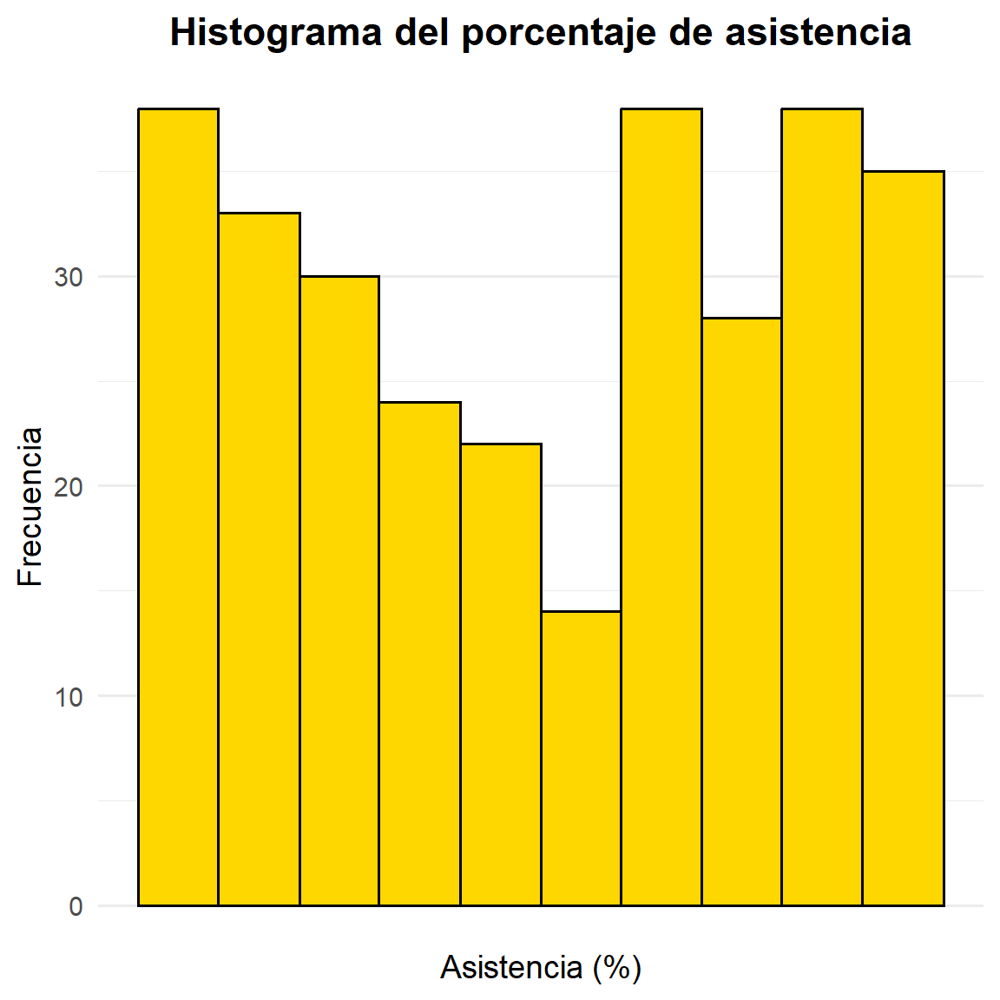
Asistencia <- tibble(
li = c(50.2, 55.1, 60.1, 65, 70, 75, 79.9, 84.9, 89.8, 94.8),
ls = c(55.1, 60.1, 65, 70, 75, 79.9, 84.9, 89.8, 94.8, 99.8),
fi = c(38, 33, 30, 24, 22, 14, 38, 28, 38, 35)
)
# Calcular acumuladas
Asistencia <- Asistencia %>%
mutate(
Fi = cumsum(fi),
Hi = Fi / sum(fi)
)
# Graficar ojiva
ggplot(Asistencia, aes(x = ls, y = Hi)) +
geom_line(color = "gold", linewidth = 1) +
geom_point(color = "black", size = 2) +
labs(
title = "Ojiva del porcentaje de asistencia",
x = "Asistencia (%) (límite superior del intervalo)",
y = "Frecuencia acumulada relativa"
) +
scale_y_continuous(labels = scales::percent) +
theme_minimal()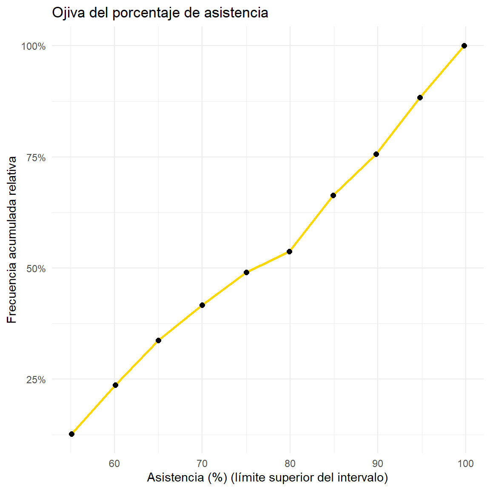
Asistencia <- data.frame(
mi = c(52.64, 57.6, 62.56, 67.52, 72.48, 77.44, 82.4, 87.36, 92.32, 97.28),
fi = c(38, 33, 30, 24, 22, 14, 38, 28, 38, 35)
)
Asistencia_expandida <- Asistencia %>%
slice(rep(1:n(), fi))
dens <- density(Asistencia_expandida$mi)
plot(dens,
main = "Densidad",
xlab = "Asistencia(%)",
ylab = "Densidad",
col = "black",
lwd = 2)
polygon(dens, col = "gold", border = "black")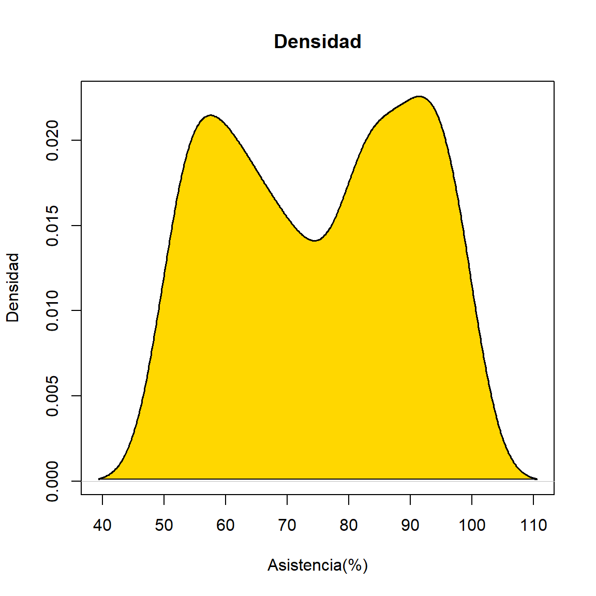
La distribución de frecuencias de la variable asistencia (%) de los 300 estudiantes evidencia una distribución heterogénea entre los diez intervalos considerados. Los intervalos [50.2,55.1], (79.9,84.9] y (89.8,94.8] presentan las mayores frecuencias absolutas, con 38 estudiantes cada uno, equivalentes a una frecuencia relativa de 0,1267 y un porcentaje del 12,67 %. Les sigue el intervalo (94.8,99.8], con 35 estudiantes (0,1167; 11,67 %), mientras que el intervalo (55.1,60.1] registra 33 estudiantes (0,1100; 11 %). Por su parte, el intervalo (75,79.9] presenta la menor frecuencia absoluta, con 14 estudiantes, correspondientes a una frecuencia relativa de 0,0467 y un porcentaje del 4,67 %. Estos resultados muestran que los estudiantes se distribuyen entre distintos rangos de asistencia, con una menor representación en el intervalo comprendido entre el 75 % y el 79,9 %, y una presencia importante tanto en los intervalos inferiores como en algunos de los superiores.
En relación con la frecuencia absoluta acumulada, se observa que 101 estudiantes registran una asistencia de hasta el 65 %; al incluir el intervalo hasta el 70 %, el acumulado asciende a 125 participantes, y al considerar los intervalos sucesivos alcanza 161 estudiantes hasta el 79,9 %, 199 hasta el 84,9 %, 227 hasta el 89,8 % y 265 hasta el 94,8 %, hasta completar los 300 participantes en el último intervalo. De manera correspondiente, la frecuencia relativa acumulada pasa de 0,1267 en el primer intervalo a 0,3367 hasta el 65 %, alcanza 0,4900 hasta el 75 %, aumenta a 0,6633 hasta el 84,9 % y llega a 0,8833 hasta el 94,8 %, hasta alcanzar 1,0000 al considerar la totalidad de los intervalos. Estos valores indican que el 33,67 % de los estudiantes presenta una asistencia de hasta el 65 %, mientras que el 66,33 % registra una asistencia de hasta el 84,9 % y el 88,33 % se encuentra en valores de hasta el 94,8 %.
En síntesis, la distribución muestra que la asistencia de los estudiantes presenta una variabilidad considerable, con concentraciones tanto en los intervalos inferiores como en algunos rangos superiores. En particular, 111 estudiantes, equivalentes al 37 % de la población, registran una asistencia superior al 89,8 %. Sin embargo, 125 estudiantes, correspondientes al 41,67 %, presentan una asistencia de hasta el 70 %. Estos resultados evidencian diferencias en los niveles de asistencia dentro de la población estudiada.
# Crear una tabla de contingencia con estrato y cursos
table_estrato_cursos <- table(educacion$Estrato, educacion$Cursos)
# Convertir la tabla a un data frame para facilitar el manejo de datos
table_df <- as.data.frame.matrix(table_estrato_cursos)
# Calcular los totales de frecuencia absoluta (Total)
table_df$Total <- rowSums(table_df) # Totales por fila
total_fi <- sum(table_df$Total) # Total general
# Añadir una fila de totales al final de la tabla
table_df <- rbind(table_df, Total = c(colSums(table_estrato_cursos), total_fi))
# Mostrar la tabla con kableExtra, aplicando color solo a la fila de Totales
table_df %>%
kable("html", caption = "Tabla de Frecuencias absolutas de # Cursos VS Promedio de los encuestados") %>%
kable_styling(bootstrap_options = c("striped", "hover", "condensed", "responsive"),
full_width = F, position = "center") %>%
row_spec(nrow(table_df), bold = T, color = "black", background = "cyan") # Resaltar solo la fila de Totales| 1 | 2 | 3 | 4 | 5 | 6 | 7 | 8 | Total | |
|---|---|---|---|---|---|---|---|---|---|
| Bajo | 13 | 16 | 9 | 14 | 9 | 16 | 13 | 7 | 97 |
| Medio | 13 | 10 | 8 | 13 | 12 | 17 | 11 | 18 | 102 |
| Alto | 15 | 14 | 8 | 13 | 16 | 8 | 14 | 13 | 101 |
| Total | 41 | 40 | 25 | 40 | 37 | 41 | 38 | 38 | 300 |
# Crear una tabla de contingencia con DEPORTE y DESEMPEÑO
table_estrato_cursos <- table(educacion$Estrato, educacion$Cursos)
# Convertir la tabla a un data frame para facilitar el manejo de datos
table_df <- as.data.frame.matrix(table_estrato_cursos)
# Calcular el total general para las frecuencias relativas
total_fi <- sum(table_df) # Total general para todas las celdas
# Calcular las frecuencias relativas
table_df <- table_df / total_fi # Dividir cada valor por el total general para obtener la frecuencia relativa
# Calcular los totales de frecuencia relativa por fila y columna
table_df$Total <- rowSums(table_df) # Totales por fila (frecuencias relativas)
total_column <- colSums(table_df) # Totales por columna (frecuencias relativas)
# Añadir una fila de totales al final de la tabla
table_df <- rbind(table_df, Total = total_column)
# Redondear todos los valores a 4 decimales
table_df <- round(table_df, 4)
# Mostrar la tabla con kableExtra, aplicando color solo a la fila de Totales
table_df %>%
kable("html", caption = "Tabla de Frecuencias Relativas de Estrato VS # Cursos de los encuestados") %>%
kable_styling(bootstrap_options = c("striped", "hover", "condensed", "responsive"),
full_width = F, position = "center") %>%
row_spec(nrow(table_df), bold = T, color = "black", background = "cyan") # Resaltar solo la fila de Totales| 1 | 2 | 3 | 4 | 5 | 6 | 7 | 8 | Total | |
|---|---|---|---|---|---|---|---|---|---|
| Bajo | 0.0433 | 0.0533 | 0.0300 | 0.0467 | 0.0300 | 0.0533 | 0.0433 | 0.0233 | 0.3233 |
| Medio | 0.0433 | 0.0333 | 0.0267 | 0.0433 | 0.0400 | 0.0567 | 0.0367 | 0.0600 | 0.3400 |
| Alto | 0.0500 | 0.0467 | 0.0267 | 0.0433 | 0.0533 | 0.0267 | 0.0467 | 0.0433 | 0.3367 |
| Total | 0.1367 | 0.1333 | 0.0833 | 0.1333 | 0.1233 | 0.1367 | 0.1267 | 0.1267 | 1.0000 |
# Calcular los porcentajes de cada categoría de Satisfaccion dentro de cada Nivel Educativo
data_porcentaje <- educacion %>%
count(Nivel_Educativo, Satisfaccion) %>%
group_by(Nivel_Educativo) %>%
mutate(porcentaje = n / sum(n) * 100)
# Crear el diagrama de barras conjuntas con porcentajes
ggplot(data_porcentaje, aes(x = Nivel_Educativo, y = porcentaje, fill = Satisfaccion)) +
geom_bar(stat = "identity", position = "dodge") + # Usar "stack" si deseas barras apiladas
labs(title = "Distribución porcentual de la satisfacción por el nivel escolar",
x = "Nivel Escolar",
y = "Porcentaje",
fill = "Satisfaccion") +
theme_minimal() +
geom_text(aes(label = sprintf("%.1f%%", porcentaje)),
position = position_dodge(0.9),
vjust = -0.5,
size = 3)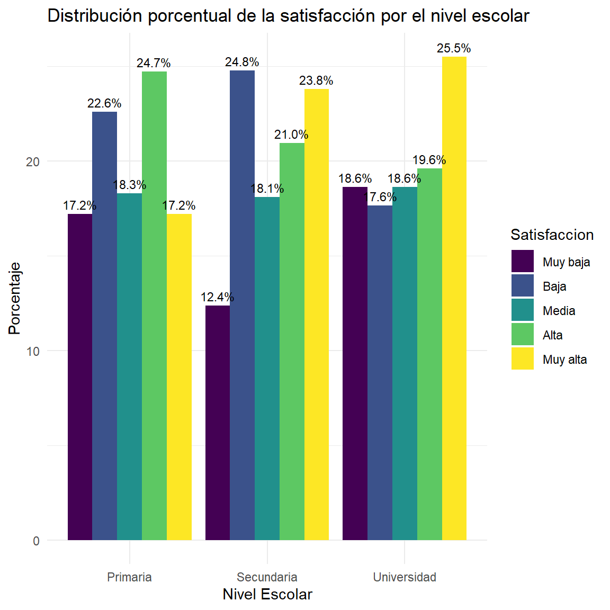
# Calcular los porcentajes de cada categoría de Satisfaccion dentro de cada Nivel Educativo
data_porcentaje <- educacion %>%
count(Nivel_Educativo, Satisfaccion) %>%
group_by(Nivel_Educativo) %>%
mutate(porcentaje = n / sum(n) * 100)
# Crear el diagrama de barras apiladas con porcentajes
ggplot(data_porcentaje, aes(x = Nivel_Educativo, y = porcentaje, fill = Satisfaccion)) +
geom_bar(stat = "identity", position = "stack") +
labs(title = "Distribución porcentual de la satisfacción por el nivel educativo",
x = "Nivel Educativo",
y = "Porcentaje",
fill = "Satisfaccion") +
theme_minimal() +
geom_text(aes(label = sprintf("%.1f%%", porcentaje)),
position = position_stack(vjust = 0.5),
color = "white",
size = 3)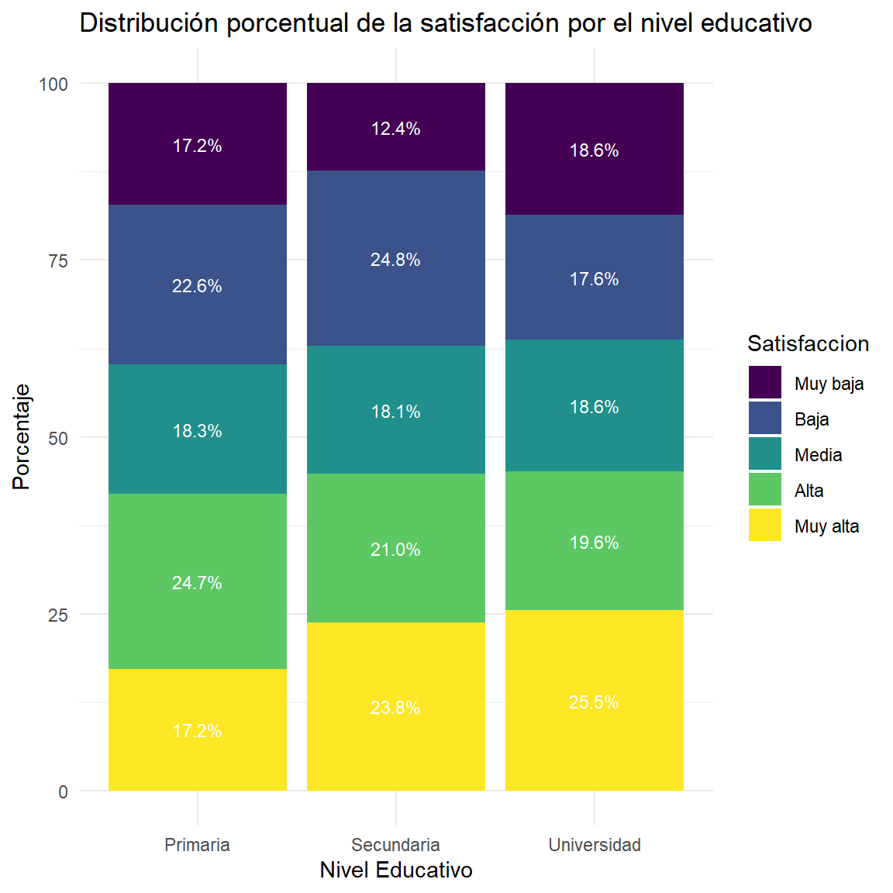
Tabla absolutas
La tabla de contingencia entre el número de cursos realizados y el promedio académico de los 300 estudiantes permite analizar la distribución conjunta de ambas variables. En la categoría de promedio bajo se registran 97 estudiantes, con una mayor frecuencia en las categorías de 2 y 6 cursos, con 16 estudiantes en cada una, mientras que la menor frecuencia corresponde a 8 cursos, con 7 estudiantes. En cuanto al promedio medio, se encuentran 102 estudiantes, siendo esta la categoría con mayor frecuencia total; dentro de ella, sobresale la realización de 8 cursos, con 18 estudiantes, seguida de 6 cursos, con 17. Por su parte, en la categoría de promedio alto se identifican 101 estudiantes, de los cuales 16 han realizado 5 cursos, constituyendo la mayor frecuencia de esta categoría, mientras que las categorías de 3 y 6 cursos presentan las menores frecuencias, con 8 estudiantes cada una.
En relación con la distribución del número de cursos, las categorías de 1 y 6 cursos presentan las mayores frecuencias marginales, con 41 estudiantes cada una, seguidas de las categorías de 2 y 4 cursos, con 40 estudiantes respectivamente. En contraste, la categoría de 3 cursos registra la menor frecuencia, con 25 estudiantes. Estos resultados permiten observar cómo se distribuyen los estudiantes de acuerdo con las combinaciones entre el número de cursos realizados y su promedio académico, sin que se identifique una tendencia uniforme en la que un mayor número de cursos corresponda necesariamente a un promedio más alto.
En síntesis, la distribución conjunta muestra que las tres categorías de promedio presentan cantidades totales similares: 97 estudiantes en el nivel bajo (32,33 %), 102 en el medio (34 %) y 101 en el alto (33,67 %). Aunque se observan diferencias en las frecuencias de algunas combinaciones específicas, como la concentración de estudiantes con promedio medio que han realizado 8 cursos, la tabla por sí sola no permite establecer una relación directa entre el número de cursos realizados y el rendimiento académico.
apiladas
La distribución porcentual de la satisfacción según el nivel educativo evidencia diferencias en la composición de las categorías de satisfacción entre los estudiantes de primaria, secundaria y universidad. En primaria, la categoría alta presenta el mayor porcentaje, con un 24,7 %, seguida de la categoría baja, con un 22,6 %, mientras que las categorías muy baja y muy alta registran un 17,2 % cada una. En secundaria, predomina la categoría baja, con un 24,8 %, seguida de la categoría muy alta, con un 23,8 %, mientras que la categoría muy baja presenta el menor porcentaje, con un 12,4 %. Por su parte, en el nivel universitario, la categoría muy alta alcanza el mayor porcentaje, con un 25,5 %, seguida de las categorías alta y media, con un 19,6 % y un 18,6 %, respectivamente. Asimismo, la categoría muy baja representa el 18,6 %, mientras que la baja registra el menor porcentaje, con un 17,6 %.
En términos generales, se observa que la categoría alta tiene una mayor representación en primaria, mientras que en secundaria sobresalen las categorías baja y muy alta. En el nivel universitario, por su parte, destaca la satisfacción muy alta, que alcanza el porcentaje más elevado entre las categorías de ese nivel educativo. Estos resultados sugieren diferencias en la distribución de la satisfacción según el nivel educativo, aunque las categorías con mayor representación varían entre los grupos. Cabe señalar que los porcentajes mostrados corresponden a la composición de cada nivel educativo, por lo que permiten comparar la distribución de la satisfacción dentro de cada grupo.